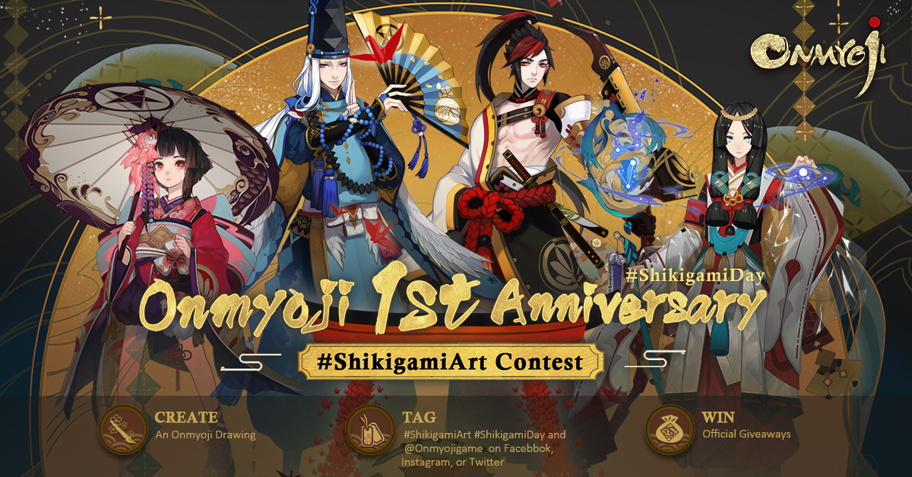
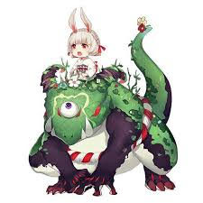
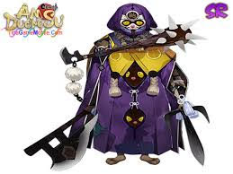
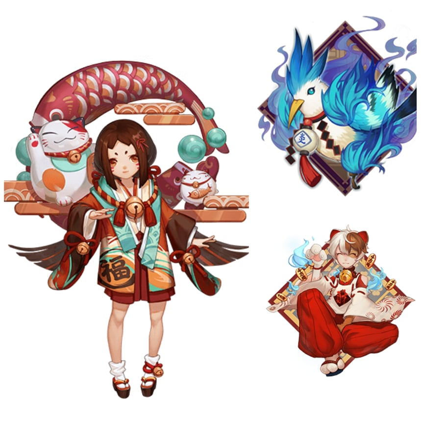
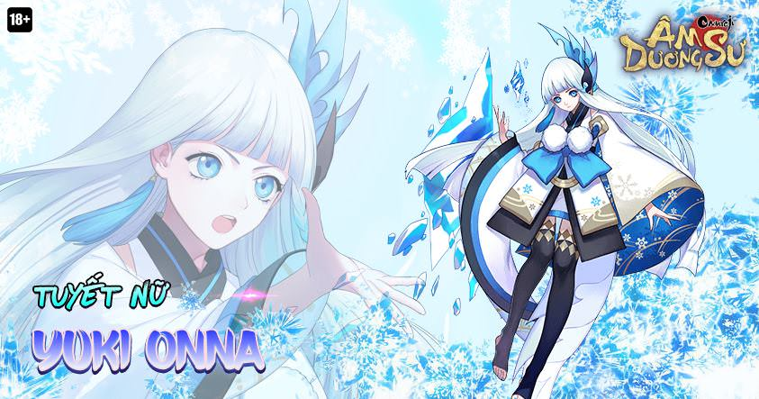
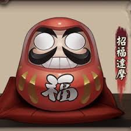
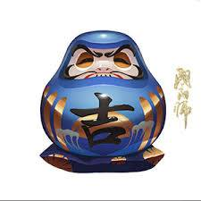
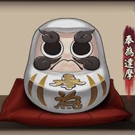
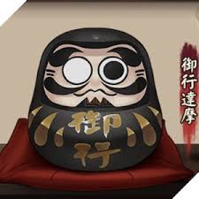

Thân gửi các bạn Newbie, nhằm để việc các Oldbie kéo boss các bạn dễ hơn và “đỡ hại não” nhau hơn, các bạn cần biết vài điều cơ bản sau. Bài viết này tổng hợp các hướng dẫn chơi game âm dương sư chi tiết cho các game thủ mới để anh em hiểu rõ hơn về cách thức hoạt động của game nhé.

Khi bắt đầu
Vào đầu game, farm farm farm và farm để cho thức thần chủ lực farm lên 6 hột là điều quan trọng.
* Những level đầu: có gì đeo nấy, đeo thành bộ phá thế cho thức thần đeo tạm cũng được.
*10-20: clear cốt truyện đến map 6, farm liên tọi , bật buff exp lên mà farm.
*20-30: clear cốt truyện lên map 10 và 11, và đóng đô ở đó farm tiếp cho đến khi thức thần 5 hột.
Cách farm:
Farm map phó bản > Farm kết giới cá nhân Farm kết giới bang chiến > Farm Map phó bản
các yêu khí nên farm:
Niên thú, Daruma trắng.
Không farm Thủy Quái vì bạn Yếu, vì nó về sau cũng chả lời gì đâu, còn lười thì farm cũng được.
Tại sao lại phải mua ngự 6?
+ Vì ngự 6 khỏe, khỏe hơn cả hột nếu +15 sớm.
+ Ngự 4 với 5 về sau ko là gì so với ngự 6, đặc biệt slot 2-4-6.
Các thứ còn lại cần phải mua trong đền với ngự trát:
* Daruma 5 sao, 4 sao: bắt buộc phải mua, nếu ko mua kịp ngự ( ngự chỉ cần slot 1-2-4 6 sao là được )
Nguyên liệu thức tỉnh đầu game ?
Hãy để dành cho thức thần chủ lực của bạn như Tỳ (Ibaraki Douji), Cẩu (Ootengu), Cò (Ubume), đừng ngu như mình đi thức tỉnh Liêm Dứu hay Tuyết Nữ rồi phải cắm mặt vào farm lại
Hướng dẫn
– Lợi thế của game turn base là ai được đánh trước, trong game, có 1 chỉ số gọi là tốc độ, chỉ số này sẽ quyết định bên nào được đánh trước. Vì thế về cơ bản, các bạn nên tìm cho mình 1 con Sơn Thố hoặc Liêm Dứu. Sau đó thì thức tỉnh và tìm các viên ngự hồn có + tốc độ mang vào cho nó. Vì 2 con này có skill kéo tốc độ cho team. Build tốc cho nó nhanh vào để đẩy lượt toàn team lên => tốc team mình cao hơn boss => đánh trước => đỡ chết và đi boss nhanh hơn.
 
– Chapter 2 các bạn sẽ được nó cho 1 thức thần tên là Tọa phu đồng tử . Con này là buff mana, tìm cho nó 1 set 4 viên ngự hồn hỏa linh hoặc chiêu tài miêu mà gắn vào để nó buff mana cho mà xài.

– Việc cuối cùng cũng là việc quan trọng nhất. Thanh mana trong game là thanh mana xài chung của tất cả các thức thần hiện đang ra sân. Vì thế, khi đi đánh boss dưới dạng party, nếu các bạn Newbie không đủ dame hoặc dame bé hơn người khác. Tốt nhất là các bạn không nên tranh xài skill để phá mana người ta. Để mana đó cho “người có đủ sát thương” hoặc “người có sát thương cao nhất” xài. Những lúc này, việc tốt nhất các bạn cần làm là thay vì xách thức thần dame ra thì xách hộ bọn mình con Sơn Thố + Tọa Phu Đồng Tử ra. Để support cho team vì nếu các bạn “phá mana” thì người đáng ra có đủ sát thương giết boss sẽ không có mana để xài => thọt dame => bị boss củ hành lại hoặc đi boss rất lâu.
-Vậy để làm sao biết ai đó mạnh hơn mình? Cái này cũng chỉ mang tính tương đối thôi vì thực tế mình có thể đoán thông qua level của những người khác. Và loại thức thần họ chọn để đưa ra sân. Dù không phải lúc nào cũng cứ level tài khoản cao hơn thì sát thương gây ra sẽ cao hơn. Tuy nhiên thì thường họ sẽ có nguồn sát thương ổn định hơn các bạn có level thấp hơn.
-Còn về loại thức thần thì vào game các bạn để ý trong quá trình chơi. Có 1 số thức thần có lượng sát thương gây ra khá khủng so với mặt bằng các thức thần khác. Hãy ghi nhớ nó, ở lần sau. Khi có ai đó mang thức thần đó ra sân và nếu bạn cảm thấy sát thương của mình không ổn định thì tốt nhất. Các bạn nên mang các thức thần loại hỗ trợ như Sơn Thố và Tọa Phu Đồng Tử ra nhé.
– Vàng trong game này rất hiếm vì up ngự hồn và thức thần cần lượng vàng khổng lồ. Vì vậy đừng phung phí nó dù cho các bạn đang có hơn 1tr vàng. Sau này các bạn sẽ thiếu vàng đến nỗi phải đổi gần như là toàn bộ ngọc trong game sang vàng để dùng.
– Đầu game các bạn sẽ được cho các con Daruma. Trong đó, các bạn cần chú ý con màu đen. Tuyệt đối không cho thức thần khác ăn bừa vì nó có công dụng tăng skill, giá của nó mắc gấp 15 lần 1 con SR. Các bạn chỉ nên cho SSR ăn (nếu có), còn không thì để dành sau này dùng. Còn muốn up skill cho thức thần loại R hay SR thì hãy tìm thức thần giống hệt nó rồi cho nó ăn.
– Mỗi tuần nhớ tham gia lôi đài (PvP). Vì khi đến cuối tuần. Các bạn sẽ đc cho khá nhiều ngọc.
– Về phần con Tuyết Nữ game cho bạn khi vừa vào, xài hay không thì tùy các bạn. Tuy nhiên nếu có ý định xài thì hãy mang cho nó set 4 ngự hồn Hộp Yêu Ma. Và chọn những viên tăng chính xác mang vào cho nó. Lúc này, khả năng gây khống chế của Tuyết khá mạnh. Sau đó hãy mang nó vào đội hình đi PvP (lôi đài). Dù là Oldbie thì cũng phải mất khá nhiều thời gian để thắng được bạn. Hạn chế bị bắt nạt trong lôi đài ở giai đoạn đầu.

– Game này cần khá nhiều nhân phẩm, thành thử. Nếu các bạn không tự tin vào nhân phẩm của mình thì không nên sa đọa vấn đề vẽ bùa đến mức dùng hết ngọc để vẽ bùa. Khi làm vậy thì tài khoản của bạn sẽ yếu hơn những người khác cùng level. Vì không có ngọc để mua vàng dẫn đến việc ngự hồn không được build đầy đủ. Mà ngự hồn yếu thì cho dù bạn xài thức thần xịn thì nó vẫn yếu thôi.
* Đừng nghĩ đến việc chửi rủa trong game khi ai đó làm gì không vừa ý các bạn. Bộ lọc chat của game này mạnh lắm. Dù có biến tấu kí tự hay dùng tiếng anh để chửi thì vẫn bị xóa thôi. Hãy vì 1 cộng đồng game lành mạnh.
– Cách sử dụng Daruma sao cho hợp lý:
– Daruma đỏ: Up lên lv 7 rồi mới cho thức thần ăn để tối ưu hóa lượng exp nhận được.
– Daruma xanh: Up lên lv 13 rồi mới cho thức thần ăn để tối ưu hóa lượng exp nhận được.
– Daruma trắng: Daruma này có lượng exp cần để lên level thấp nhất. Hãy nuôi nó lên 4-5 hột rồi hẵn dùng nâng hột cho các thức thần chính.
– Daruma đen: Chỉ nên dùng up skill cho SSR hoặc các SR mà bạn chắc chắn sẽ dùng luôn. (đề xuất cho Cô Hoạch Điểu).

– Thoát ra giữa trận đấu hoặc khi thua trận (khi đánh các loại boss Rắn, Kì Lân, Tuột) sẽ không mất sushi (năng lượng). Nên các bạn cứ thoải mái out nếu các bạn cảm thấy chắc chắn sẽ thua cho đỡ mất thời gian. Khi thoát trận trong chế độ Party, các thức thần của bạn vẫn tham chiến cùng những người còn lại dưới chế độ Auto. Tuy nhiên, bạn sẽ không nhận được phần thưởng nếu thắng trận
– Trong game, ngự hồn chia làm 6 vị trí. Cột bên trái từ trên xuống là vị trí 1 2 3. Cột bên phải từ dưới lên là vị trí 4 5 6. Trong đó:
- – Chỉ số chính của ngự hồn vị trí 1 luôn là tăng Công kích (được tính bằng điểm)
- – Chỉ số chính của ngự hồn vị trí 3 luôn là tăng Phòng thủ (được tính bằng điểm)
- – Chỉ số chính của ngự hồn vị trí 5 luôn là tăng Máu tối đa (được tính bằng điểm)
- – Các chỉ số chính thuộc loại Công kích, Phòng thủ, Máu tối đa xuất hiện ở vị trí 2 4 6 luôn tăng theo %.
 Privacy Policy, Terms and Conditions
Privacy Policy, Terms and Conditions